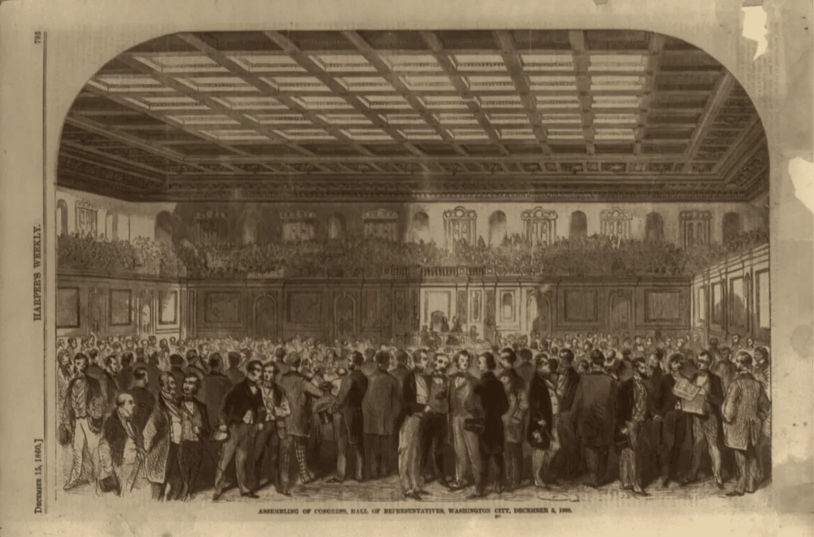

· Edición 3 · 5 min de lectura
Proyecto de presupuesto 2027: 40% menos subsidios para los más pobres
Revisada el · 1 actualización y 1 corrección posteriores a la publicación

Proyecto de presupuesto 2027: 40% menos subsidios para los más pobres
Ver todo el tema, de principio a fin →
En pocas palabras. El proyecto de presupuesto 2027 baja 40% los subsidios para los más pobres. Cuando hay menos para repartir, importa más a quién le llega. Brasil tiene una forma de hacerlo que vale la pena mirar.
Qué pasó. El proyecto recorta 40% los subsidios para la población de menores ingresos: de cada 10 pesos de esa ayuda, se irían 4. Cuando la cuenta no cuadra, el ajuste suele empezar por quien menos puede reclamar.
¿Alguien lo ha resuelto? Brasil reparte con dos piezas. El Cadastro Único es el registro nacional de familias de bajos ingresos. Bolsa Família les da a esas familias una ayuda mensual en dinero.
Cómo funciona.
- Una sola lista, hecha con una entrevista en persona de cerca de una hora y puesta al día cada 24 meses.
- Cupos por municipio, según cuántas familias pobres tiene. Van primero los hogares con menos ingreso por persona y más niños.
- Los municipios reciben plata para hacerlo, según un índice que mide qué tan bien hacen el trabajo.
Qué logró. Las ayudas en dinero para los más pobres explicaron cerca de un tercio de la baja de la desigualdad, y Bolsa Família fue una parte de eso. Y cada vez llega más a los más pobres:
Fuente: Cifras citadas en esta edición
Ver datos
| % | |
|---|---|
| 2012 | 32,6 |
| 2018 | 38,9 |
Pero ojo.
- Siempre queda gente por fuera. En 2006, Brasil cumplió su meta de cobertura, pero unos 3,4 millones de hogares con derecho a la ayuda seguían sin recibirla.
- Ir a clase no es aprender. Más niños fueron a la escuela, pero eso no se tradujo en mejores notas ni en menos trabajo infantil.
El recorte a la justicia transicional: sin salida conocida (Colombia)
En pocas palabras. El presupuesto le quita 170.000 millones de pesos a las entidades que creó el acuerdo de paz para atender a las víctimas. La plata pasa a la justicia ordinaria y al deporte. No encontramos ningún país que haya protegido esta clase de justicia de los vaivenes de la política.
Qué pasó. La ponencia, el texto que se vota en el Congreso, le quita esa plata al Sistema Integral de Verdad, Justicia, Reparación y No Repetición.
El total, 634,95 billones de pesos, no cambia: 100.000 millones van a la justicia ordinaria y 70.000 millones al deporte. El recorte terminó siendo 70% mayor que el inicial.
La JEP, el tribunal que juzga los crímenes del conflicto, pide más de lo que le da el proyecto:
Las dos posturas.
A favor. El Ministerio de Hacienda dice que es un ajuste para escoger qué va primero, sin afectar las funciones esenciales de la JEP. Y la justicia ordinaria tiene poca plata y atiende a muchas más personas.
En contra. Organizaciones de víctimas advierten que perderán participación y acceso. La inversión recortada paga la reparación y la búsqueda de personas desaparecidas.
Sin salida conocida. No encontramos un caso documentado que lo haya logrado. Queda pendiente para investigar.
Por qué no se arregla.
- Sus resultados son lentos, y ayuda a gente con poco peso político.
- Es un círculo. Se recorta porque no muestra resultados, y con menos plata para los sistemas de información es más difícil mostrarlos.
Ya pasó antes. (Conocimiento general.) Los tribunales para la antigua Yugoslavia, Ruanda y Sierra Leona vivieron con problemas de plata. El patrón: estas instituciones duran mientras dura el acuerdo político que las creó.
La ONU reconoce que se superará la meta de calentamiento de París
En pocas palabras. La ONU reconoció que el planeta se calentará más de lo que buscaba el Acuerdo de París, al menos por un tiempo. Si no se puede evitar del todo, toca prepararse. Bangladés lleva 50 años haciéndolo, y hoy sus ciclones matan a muchísima menos gente.
Qué pasó. En la última cumbre del clima de António Guterres como secretario general de la ONU, el mensaje oficial fue que el sobrepaso ya es inevitable. El calentamiento pasará, al menos por un tiempo, la meta más ambiciosa de París.
¿Alguien lo ha resuelto? Bangladés lleva 50 años preparándose para vivir con los ciclones. Mire cuánta gente murió en cada uno:
Escala logarítmica: cada marca vale diez veces la anterior.
Fuente: Cifras citadas en esta edición; Bhola y Sidr son aproximadas
Ver datos
| muertes | |
|---|---|
| Bhola, 1970 | 500.000 (aproximado) |
| Gorky, 1991 | 138.958 |
| Sidr, 2007 | 4.000 (aproximado) |
| Amphan, 2020 | 26 |
Cómo lo hicieron.
- Refugios: de 42 en 1970 a más de 12.000 hoy, para unos 5 millones de personas.
- Gente preparada: más de 200 empleados y 76.000 voluntarios, que avisan desde las redes sociales hasta en bicicleta con megáfono.
- Obras y plata propia: diques, manglares y un fondo para el clima que ha movido unos 450 millones de dólares desde 2010.
Pero ojo.
- Se salvan vidas, no el sustento. Las pérdidas en infraestructura, cultivos y ganado casi no bajaron.
- No hay cupo para todos. Los refugios no alcanzan para los 35 millones de personas de la costa, y no reciben animales.
Lo que se aprendió. Desde 2020, la mitad de los voluntarios son mujeres, y eso ayudó a que ellas evacuaran a tiempo. La adaptación que funciona es, sobre todo, gente organizada durante décadas.
Seguimiento: Chaparral
Tercer día de temblores en Chaparral, Tolima: cerca de 200 entre el 20 y el 22, diez de magnitud 4 o más. Se suspendieron las clases.
Las alertas tempranas no sirven cuando el sismo nace justo debajo del municipio. Lo que salva vidas es construir bien, reforzar las casas y que la comunidad sepa qué hacer.
Asombro
La energía oscura podría estar debilitándose. Datos de cerca de 3.000 estrellas en explosión sugieren que la fuerza que acelera la expansión del universo no sería constante.
Dos estrellas muertas que giran una alrededor de la otra cada 374 segundos. Son un par de enanas blancas. Un año en ese sistema dura poco más de seis minutos.
La paradoja del día
Lo más absurdo de la edición, en dos líneas
En 2006, Brasil cumplió su meta de cobertura de Bolsa Família, mientras unos 3,4 millones de hogares con derecho seguían esperando. Y el programa llenó más los salones de clase, pero no subió las notas.
Glosario
Las palabras técnicas, explicadas
- Commodity: materia prima estandarizada cuyo precio lo fija el mercado mundial, no el productor.
- PIB: todo lo que produce un país en un año; se usa como denominador para comparar países de distinto tamaño.
- Déficit fiscal: el Estado gastó más de lo que recibió. El global incluye intereses de deuda; el balance primario los excluye.
- Déficit estructural: el déficit descontando el efecto del ciclo económico.
- Regla fiscal: ley que limita cuánto puede gastar o endeudarse el Estado, con metas numéricas.
- Gastos tributarios: exenciones y tarifas especiales; dinero que el Estado deja de recibir.
- Focalización: decidir a quién le llega un subsidio; lo contrario es universal.
Seguimiento de la decisión
Se tomó · plazo:
Congreso: Aprobar el presupuesto de 2027, que incluye el recorte a la justicia del acuerdo de paz.
Aprobado por 634,9 billones de pesos: el Senado lo votó el 19 de octubre y la Cámara, en la madrugada del 20, con el mismo texto; pasa a sanción presidencial.
Pendiente · sin fecha fija
Congreso: Decidir si aprueba el recorte de 40% a los subsidios para la población de menores ingresos que trae el proyecto de presupuesto.
Pendiente · sin fecha fija
Congreso: Votar el recorte de 170.000 millones de pesos al sistema de justicia creado por el acuerdo de paz, que incluye a la JEP.
Correcciones
Datos corregidos después de publicar; cada corrección lleva su fecha.
Corrección ·
Reescribimos la edición en un lenguaje más sencillo, con frases cortas y ejemplos cotidianos. Los datos y las fuentes son los mismos.